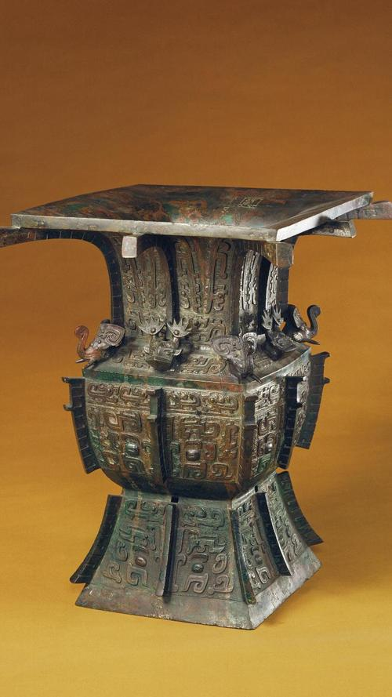
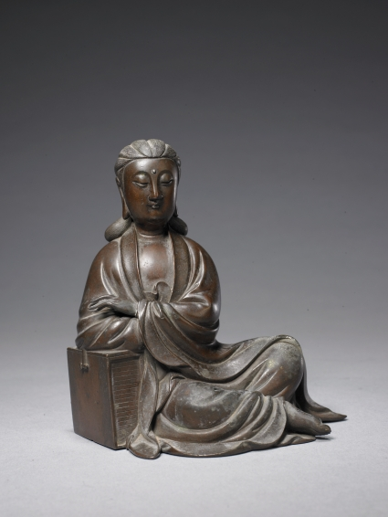
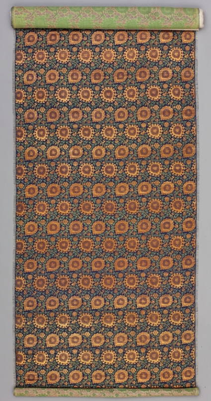
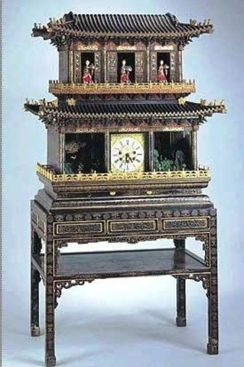
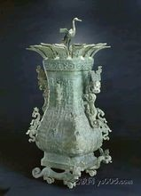
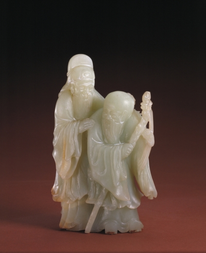

- 
- 亚酗方尊

- 乾隆全永固杯

- 张成造雕漆云纹盘
- 口父乙鼎
商
- 铜鎏金佛座像
唐
- 铜鎏金释迦牟尼佛坐像
明永乐
- 铜鎏金狻猊
唐
- 带铜镀金座金佛
清
- 铜鎏金观世音立像
北魏神龟元年
- 
- 铜书箱观音菩萨坐像
明
- 金嵌珠七珍-将军
清
- 金嵌珠七珍-摩尼宝
清
- 乾隆款金三连佛
清乾隆
- 金嵌珠七珍-轮宝
清
- 白色的金胡桃纹回回锦
清

- 元青色地冰梅纹锦
清乾隆
- 黄色云龙纹妆花缎
清乾隆
- 金鳞宝相花纹锦
清康熙
- 
- 蓝色地胡桃纹织金双层锦
明
- 蓝色地曲水三多花卉纹锦
清乾隆
- 蓝色蔓草团牡丹纹暗花缎
清乾隆
- 绿色缠枝莲纹织金缎
清乾隆
- 绿色凤凰牡丹纹织金缎
清乾隆
- 杏黄色小云龙纹织金绸
清乾隆
- 月白色缠枝莲纹织金缎
清雍正
- 蓝色缂丝云龙纹褂
清顺治
- 匏制蒜头瓶

- 各种釉彩大瓶
- 德化窑白釉达摩立像
明
- 钧窑月白釉长颈瓶
宋
- 成化款青花折枝连纹碗
明化成
- 陶黄釉牛
隋
- 陶鸡
东汉

- 陶骆驼
唐
- 陶女立俑
东汉
- 孔雀绿釉加紫狮子
清康熙
- 祭蓝釉白龙纹盘
元
- 洒蓝描金小棒槌瓶
清康熙
- 龙泉窑青釉三足炉
宋
- 乾隆款蓝地描金盖碗
清乾隆

- 《清明上河图》
- 西晋陆机的《平复帖》

- 沈子蕃缂丝《梅鹊》轴
- 《九成宫醴泉铭》
- 冯承素摹《兰亭序》

- 王献之《中秋帖》卷
- 王珣《伯远帖》卷
- 阎立本《步辇图》卷
- 顾恺之《洛神赋图》卷
- 范廷镇花卉图册
清
- 范廷镇花卉图册
清
- 范廷镇花卉图册
清
- 范廷镇花卉图册
清
- 范廷镇花卉图册
清
- 清铜镀金写字人钟
- 铜镀金浑天合七政仪
清
- 铜镀金简平星盘仪
清
- 铜镀金七政仪
清
- 铜镀金浑天合七政仪
清
- 铜镀金月球顶人打月钟
清乾隆
- 
- 彩漆庙全楼阁式开门
群仙祝寿御制钟
- 木楼式时刻更钟
清乾隆
- 铜镀金嵌料石转人升降塔钟
清乾隆
- 铜镀金嵌玛瑙规矩箱
清乾隆
- 铜镀金人指时刻分钟
清乾隆
- 铜镀金自开门人打钟
清乾隆
- 大清受命之宝
- 大禹治水图玉山
- 红山文化玉人兽神像
- 
- 莲鹤方壶

- 青玉云龙纹炉
- 青玉水仙盆景
- 桐荫仕女玉雕
清乾隆
- 青玉勾云纹环
战国
- 白玉绣雕花鸟纹炉顶
明
- 
- 青玉双人
清
- 宋定窑孩儿枕
北宋
- 邢窑白釉葵口腕
唐
- 珊瑚狮子
清
- 寿山石伏狮罗汉坐像
清